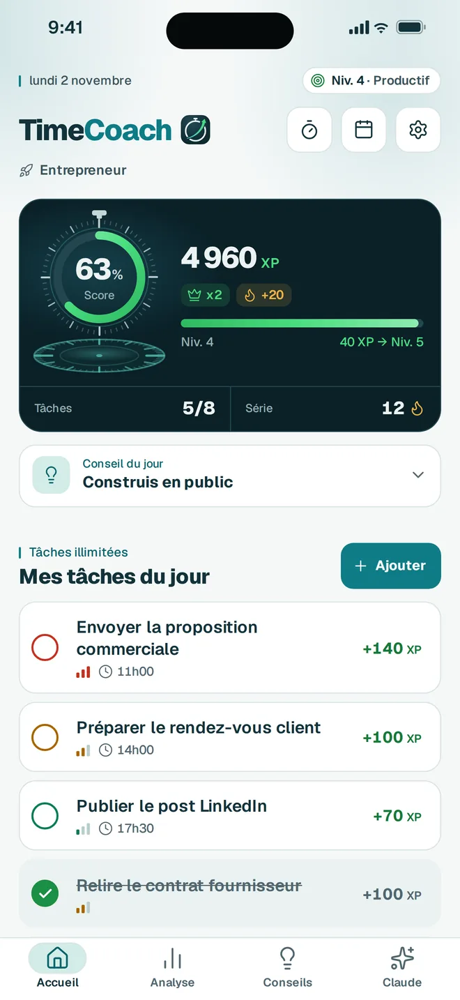
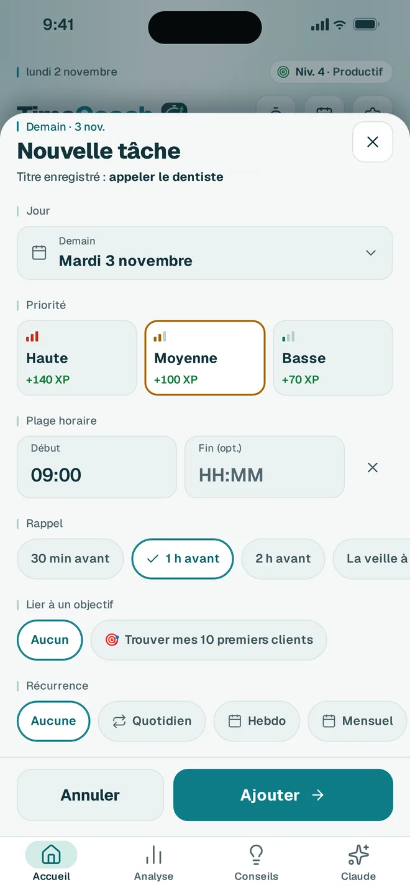
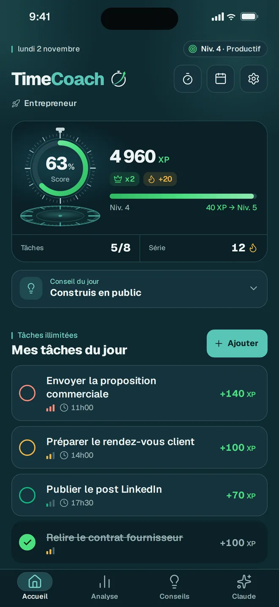
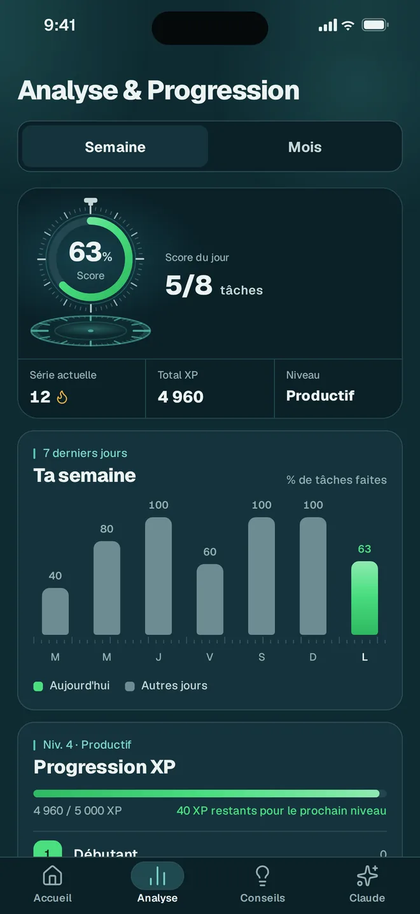
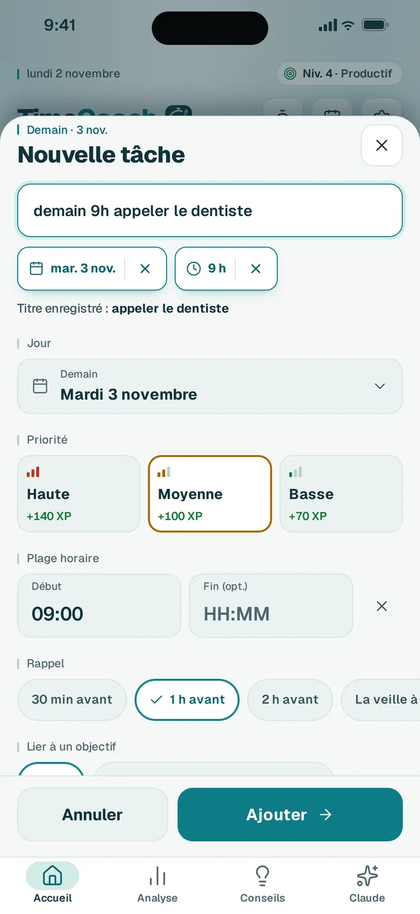
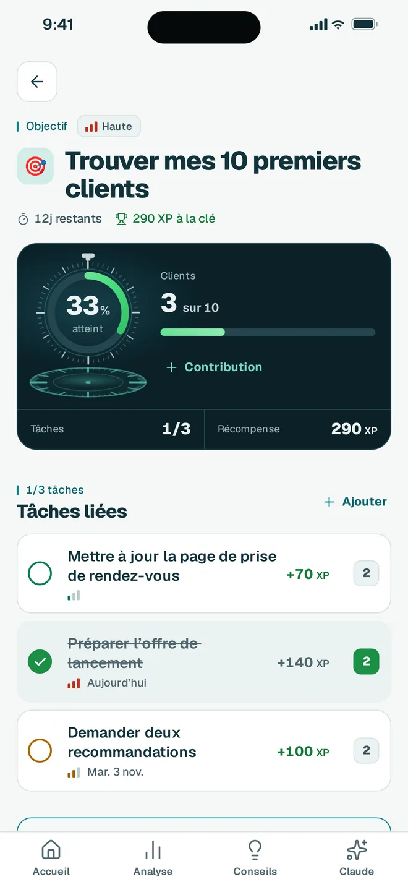
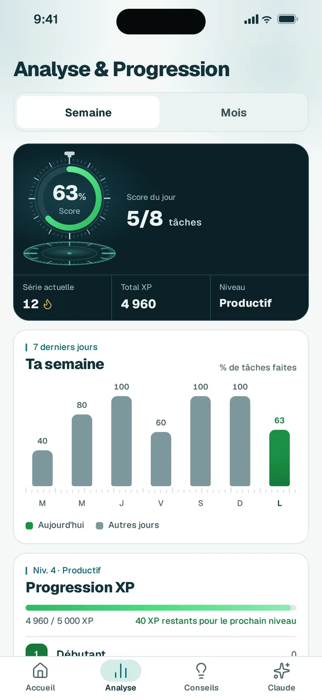
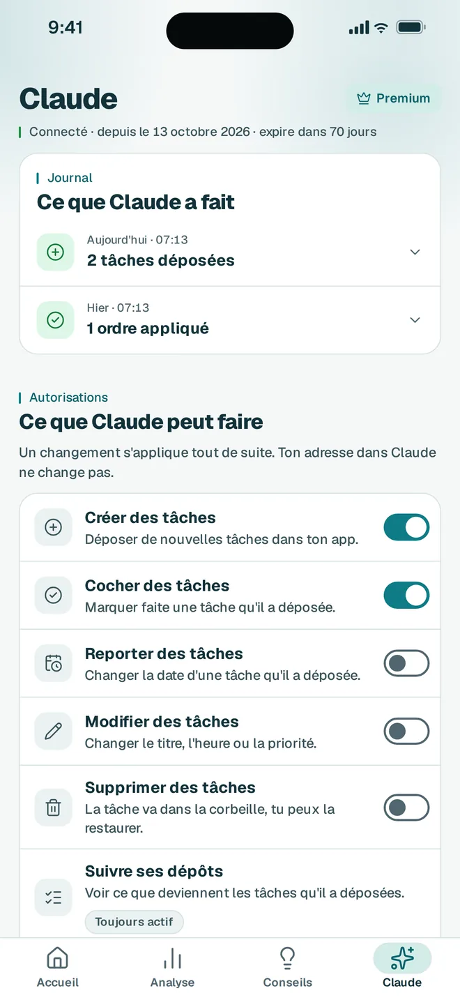

Le rappel en retard, ailleurs
Les notifs n’arrivent pas
Tu programmes un rappel pour 14h. Il sonne à 14h12. Ou jamais. Surtout sur Xiaomi, Huawei, Samsung. Android tue les apps en arrière-plan, et personne ne le dit.
Version 2.0 · iPhone et Android
Rappels précis qui ne ratent jamais sur Xiaomi/Samsung, gamification basée sur tes vraies tâches, et un Connecteur Claude pour déposer et gérer tes tâches depuis l’app Claude. Pour celles et ceux qui en ont marre des to-do listes oubliées.
14 jours Premium offerts · sans engagement · annulable en un geste

Le problème
Le rappel en retard, ailleurs
Tu programmes un rappel pour 14h. Il sonne à 14h12. Ou jamais. Surtout sur Xiaomi, Huawei, Samsung. Android tue les apps en arrière-plan, et personne ne le dit.
Sur tes vraies tâches, pas sur l’eau bue
Tu gagnes des points pour avoir bu de l’eau. Tu débloques des badges qui ne veulent rien dire. La distraction prend le pas sur la productivité.
Une app qui s’adapte à toi
Une liste statique, des rappels qui arrivent en retard, aucune récompense pour ce que tu fais vraiment. Forcément, tu décroches.
La solution
01 · Rappels exacts
On a passé des semaines à debugger les optimisations batterie d’Android. Channel HIGH, importance MAX, onboarding par marque. Résultat : tes rappels arrivent vraiment, pas avec 12 minutes de retard comme ailleurs.
Xiaomi · Samsung · Huawei · Oppo · Vivo : guidage par marque

1 h avantLe rappel que tu choisis,
puis l’heure pile
XP, niveaux, séries, 33 badges. Mais basés uniquement sur tes vraies tâches importantes. Pas sur boire de l’eau. La progression, mais sans la distraction.


Étudiant, parent, entrepreneur ou investisseur : chaque profil débloque ses objectifs types et ses experts dédiés.
Étudiant, parent, entrepreneur… selon le moment. Change de profil en un tap, l’app suit.
Chaque jour, un conseil personnalisé des plus grands experts de ton domaine. 60+ citations adaptées à ton profil.
Aperçu de l’app
Une interface pensée pour être belle et motivante. Chaque profil avec ses objectifs et ses experts.



Version iPhone
TimeCoach est désormais disponible sur l’App Store.
05 · Connecteur Claude
Dis à Claude ce que tu as à faire, depuis l’app Claude. Il dépose tes tâches dans TimeCoach, puis les coche, les reporte, les modifie ou les supprime quand tu le demandes. Tout s’applique à ta prochaine ouverture de l’app.
Le Connecteur Claude demande l’application Claude et un abonnement TimeCoach Premium. TimeCoach est une application indépendante, ni éditée ni approuvée par Anthropic.
Dépose mes trois tâches de demain : appeler le comptable à 9h, envoyer le devis, préparer la réunion de 14h.
Elles arrivent à ta prochaine ouverture de l’app.

Face à la concurrence
| Fonction | TimeCoach | Todoist | Habitica | TickTick |
|---|---|---|---|---|
| Gestion de tâches | oui | oui | oui | oui |
| Rappels précis (Xiaomi/Samsung) | oui | partiel | non | partiel |
| Conseils d’experts reconnus | oui | non | non | non |
| 7 profils personnalisés | oui | non | non | non |
| Système XP utile (vraies tâches) | oui | non | partiel | non |
| Tes données restent privées | oui | non | non | non |
Tarifs
Le gratuit suffit pour la plupart. Le Premium ajoute le Connecteur Claude, l’XP doublé, les tâches récurrentes et tout l’illimité.
Pour toujours, sans limite de durée.
14 jours offerts. Annulable en un geste.
Sans engagement. Annulable à tout moment depuis le Play Store ou l’App Store.
Questions fréquentes
Parce que le Connecteur Claude repose sur un serveur que je paie et que je maintiens. Et parce que je suis un développeur indépendant, pas une grosse boîte qui revend tes données. Le tarif est volontairement bas pour rester accessible aux étudiants et aux freelances.
Oui, c’est notre obsession depuis le début. L’app détecte ta marque au lancement et te guide étape par étape pour activer les bonnes permissions (démarrage en arrière-plan, alarmes exactes, etc.). Sans ça, aucune app productivité ne fonctionne correctement sur ces marques.
Dans l’onglet Claude de l’app, tu génères un jeton et tu colles l’adresse dans Claude (Paramètres, Connecteurs, Ajouter un connecteur personnalisé), une seule fois. Ensuite, tu demandes à Claude de déposer des tâches : elles arrivent dans TimeCoach à ta prochaine ouverture de l’app. Tu choisis ce que Claude peut faire et tu vois tout dans le journal. Réservé aux membres Premium.
Oui. Tes tâches, objectifs et progression sont stockés en local sur ton téléphone. Seules les tâches que Claude dépose, et ses ordres, passent par notre serveur pour arriver dans l’app. Tu peux régénérer ton jeton à tout moment. Aucune revente, aucun tracking publicitaire. Conforme RGPD.
Tu annules en un geste depuis le Play Store ou l’App Store. Tu repasses automatiquement sur la version gratuite, qui reste largement utilisable. Aucun engagement, aucune mauvaise surprise.
Oui ! TimeCoach est disponible sur l’App Store depuis juillet 2026, en plus de Google Play.
Un développeur indépendant basé en Belgique, Fervia. Pas une grosse boîte, pas d’investisseurs. Juste quelqu’un qui voulait une app productivité honnête, et qui l’a faite.